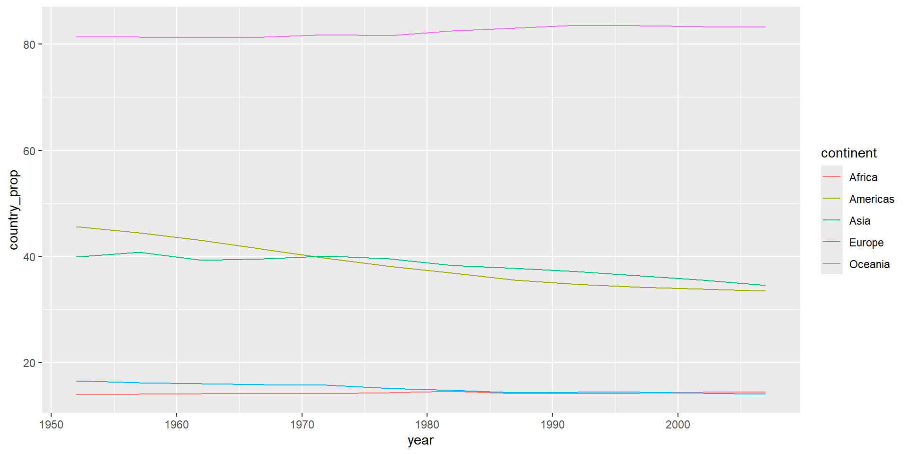
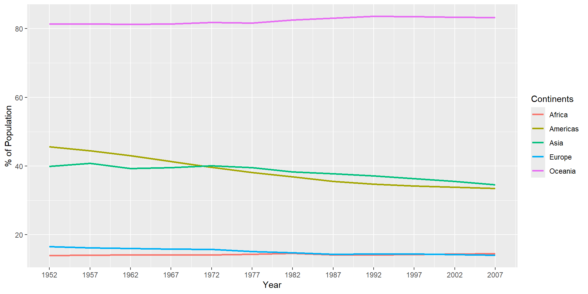
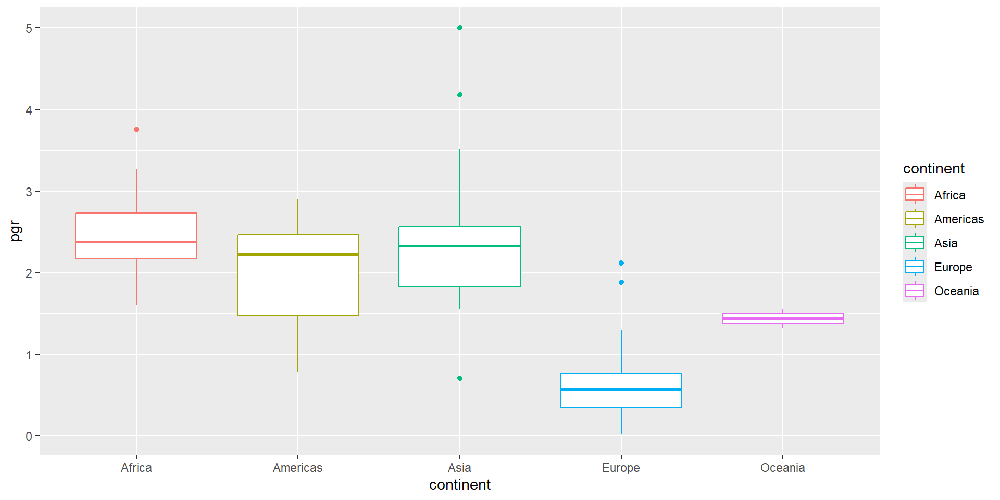
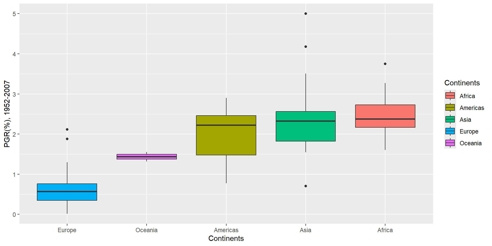

# A tibble: 1,704 × 6
country continent year lifeExp pop gdpPercap
<fct> <fct> <int> <dbl> <int> <dbl>
1 Afghanistan Asia 1952 28.8 8425333 779.
2 Afghanistan Asia 1957 30.3 9240934 821.
3 Afghanistan Asia 1962 32.0 10267083 853.
4 Afghanistan Asia 1967 34.0 11537966 836.
5 Afghanistan Asia 1972 36.1 13079460 740.
6 Afghanistan Asia 1977 38.4 14880372 786.
7 Afghanistan Asia 1982 39.9 12881816 978.
8 Afghanistan Asia 1987 40.8 13867957 852.
9 Afghanistan Asia 1992 41.7 16317921 649.
10 Afghanistan Asia 1997 41.8 22227415 635.
# ℹ 1,694 more rowsData Exploration
Sang-Il Lee
Basic Concepts
Exploration in a data science process

Exploration in a data science process
- Data exploration is a process of interacting with data to answer questions.
- A sequential process from data transformation and data visualization is central to data exploration.
- Data transformation is often a necessary prerequisite for data visualization.
데이터 탐색의 절차
질문에 답할 수 있는 그래픽(플롯, 지도 등)을 구상한다.
구상한 그래픽에 부합하도록 데이터를 변형한다.
변형한 데이터를 구상한 그래픽으로 시각화한다.
그래픽으로부터 질문의 답을 구하고, 더 나아가 지식, 이해, 통찰을 이끌어낸다.
Three Examples
Data
-
gapminderdata set
Question 1
아시아의 1957년과 2007년의 1인당 GDP는 얼마이며 순위는 어떠한가? 1인당 GDP의 순위가 상승하였는가?
Question 1
# A tibble: 10 × 5
# Groups: year [2]
year continent sum_pop sum_gdp gdp_percap_cont
<int> <fct> <dbl> <dbl> <dbl>
1 1957 Oceania 11941976 1.34e11 11192.
2 1957 Americas 386953916 3.52e12 9098.
3 1957 Europe 437890351 3.30e12 7535.
4 1957 Africa 264837738 3.83e11 1445.
5 1957 Asia 1562780599 1.56e12 998.
6 2007 Oceania 24549947 8.07e11 32885.
7 2007 Europe 586098529 1.48e13 25244.
8 2007 Americas 898871184 1.94e13 21603.
9 2007 Asia 3811953827 2.07e13 5432.
10 2007 Africa 929539692 2.38e12 2561.Question 2
대륙별 최대국(인구가 가장 많은 나라)이 소속 대륙 전체에서 차지하는 비중(%)이 어느 정도이고 대륙별로 어느 정도의 차이가 있는지, 그리고 대륙별 최대국의 비중이 시간이 지남에 따라 어떠한 변화 양상을 보이고, 그러한 양상에 대륙별 차이가 있는지를 탐색
Question 2

gapminder |>
group_by(year, continent) |>
mutate(
sum_cont = sum(pop),
country_prop = pop * 100 / sum_cont
) |>
slice_max(country_prop) |>
ggplot() +
geom_line(aes(x = year, y = country_prop, color = continent), linewidth = 1) +
scale_x_continuous(breaks = seq(1952, 2007, 5)) +
labs(x = "Year", y = "% of Population", color = "Continents")
Question 3
1952~2007년간의 연평균 인구성장률의 대륙간 차이와 대륙 내 국가간 편차를 동시에 탐색
연평균 인구성장률(%)은 다음의 공식에 의거해 산출
\[ r=\frac{1}{n}\times\ln(\frac{P_n}{P_0})\times100 \]
Question 3

gapminder |>
pivot_wider(
id_cols = c(country, continent),
names_from = year,
values_from = pop
) |>
mutate(
pgr = (1/(2007-1952))*log(`2007`/`1952`) * 100
) |>
ggplot(aes(x = fct_reorder(continent, pgr, median), y = pgr)) +
geom_boxplot(aes(fill = continent)) +
labs(x = "Continents", y = "PGR(%), 1952-2007", fill = "Continents")